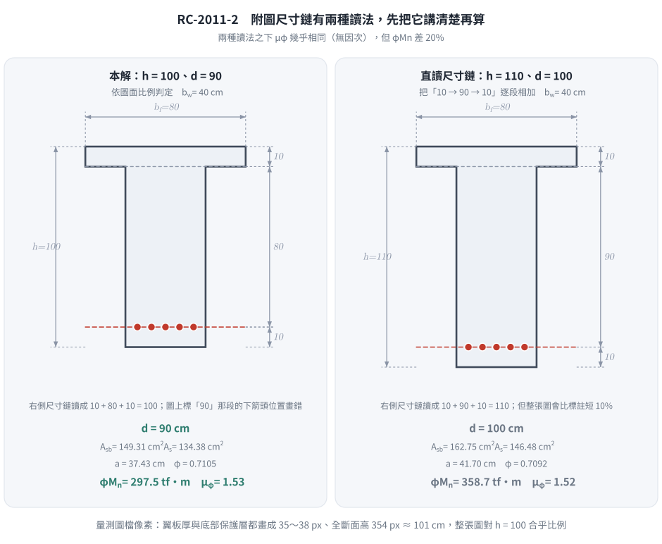
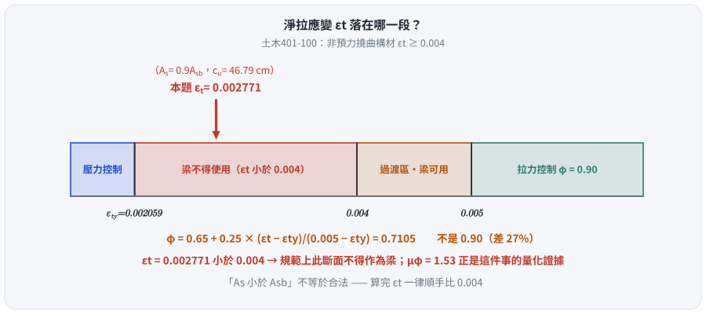
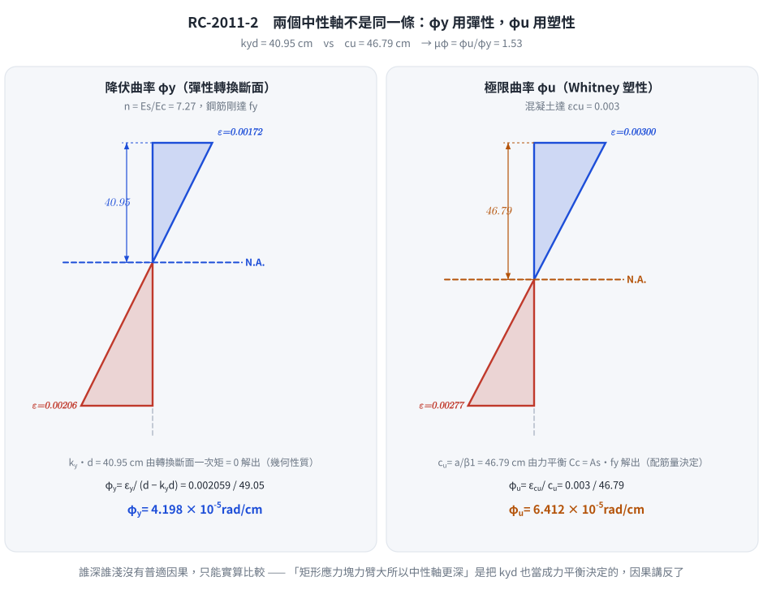

考題編號：RC-2011-2
主分類： RC-U1-1 RC 梁彎矩強度分析與設計
副分類： 無
設計法： USD 強度設計法
標籤： T形梁 平衡鋼筋量 NA在腹板 過渡區φ值 斷面韌性容量 曲率延展比 降伏曲率 極限曲率 彈性中性軸 As=0.9Asb 超筋斷面 εt<0.004 圖面尺寸歧義
1. 原始題目重述 (Problem Restatement)
針對圖 1 所示之 T 型 RC 梁斷面（RC-2011-2-fig-1.png）：

圖說：翼板寬 $b_f=80$ cm，翼板厚 $h_f=10$ cm；腹板寬 $b_w=40$ cm；全斷面總高 $h=100$ cm；底部鋼筋形心至底纖維距離 10 cm，故有效深度 $d=90$ cm；受拉鋼筋 $A_s$ 位於底部。
⚠ 圖面尺寸鏈有歧義： 右側「10→90→10」若當成連續尺寸鏈直讀，會得 $h=110$、$d=100$。
本解依圖面比例判定為 $h=100$、$d=90$；兩種讀法的完整數值對照見 §5 ⑥。
材料： $f'_c = 350$ kgf/cm²，$f_y = 4200$ kgf/cm²
(一) 已知 $A_s = 0.9A_{sb}$（$A_{sb}$ 為此 T 型梁之平衡鋼筋量），求設計彎矩強度 $\phi M_n$。（15 分）
(二) 求斷面韌性容量 $\mu_\phi = \phi_u / \phi_y$，其中 $\phi_u$ 及 $\phi_y$ 分別為極限曲率及降伏曲率。（10 分）

圖 1 附圖尺寸鏈的兩種讀法（向量重繪）。先把「$d$ 到底是 90 還是 100」講清楚再算，這張圖攔下「照尺寸鏈直讀卻沒察覺與圖面比例矛盾」——兩種讀法的 $\phi M_n$ 差 20%。
2. 考題核心精神與出題者意圖 (Core Concepts & Examiner's Intent)
核心觀念：
- (一)：T型梁平衡鋼筋量計算需考慮翼板額外壓力貢獻；$A_s = 0.9A_{sb}$ 表示輕微低配筋，中性軸仍在腹板（過渡區）。
- (二)：曲率延展比 = 極限曲率（Whitney 應力塊非線性中性軸）/ 降伏曲率（彈性轉換斷面中性軸）；重配筋比 → 低延性。
出題者意圖：
- 測驗是否能正確判斷 T 型梁平衡條件下中性軸位置（翼板內 vs. 腹板中）
- 測驗 $\phi$ 值過渡區插值是否會算
- 測驗 $\phi_y$ 與 $\phi_u$ 採用不同中性軸（彈性 vs. 塑性）的觀念
3. 解題戰略地圖與陷阱分析 (Strategic Roadmap & Trap Analysis)
作戰計畫：
- 確認材料常數（$\beta_1$、$\varepsilon_y$、$E_c$、$n$）
- 求 T 型梁 $A_{sb}$：先算平衡 $c_b$、$a_b$，判斷翼板是否完全壓縮
- 求 $A_s = 0.9A_{sb}$，再反算實際 $a$
- 計算 $\varepsilon_t$，決定 $\phi$ 值
- 對 $A_s$ 位置取矩，得 $M_n$；乘 $\phi$ 得 $\phi M_n$
- 求彈性中性軸深度 → $\phi_y$
- 用塑性中性軸 → $\phi_u$
- 計算 $\mu_\phi = \phi_u/\phi_y$
關鍵陷阱：
| 陷阱 | 說明 | 應對 |
|---|---|---|
| ❶ $A_{sb}$ 須用 T 型梁公式 | 不能直接用 $\rho_b \cdot b_w \cdot d$，翼板多出壓力 $\to$ 多出鋼筋 | $A_{sb} = A_{sf} + A_{sw}$；或直接用壓力平衡 |
| ❷ $a_b$ 跨過翼板 | $a_b = 42.7$ cm $> h_f = 10$ cm，壓力區形狀是倒 T，非矩形 | 壓力 = 翼板 + 腹板矩形塊，分開計算 |
| ❸ 過渡區 $\phi$ 值 | $\varepsilon_y < \varepsilon_t < 0.005$，$\phi$ 需線性插值，非直接 0.9 | $\phi = 0.65 + 0.25\dfrac{\varepsilon_t - \varepsilon_y}{0.005 - \varepsilon_y}$ |
| ❸' 漏檢 $\varepsilon_t \geq 0.004$ | 本題 $\varepsilon_t = 0.00277 < 0.004$，規範上此斷面不得作為梁 | 算完 $\varepsilon_t$ 一律順手比 0.004，見 §5 ② |
| ❹ $\phi_y$ 用彈性中性軸，$\phi_u$ 用塑性中性軸 | 兩個中性軸概念不同，不可混用 | $\phi_y = \varepsilon_y/(d - k_y d)$；$\phi_u = \varepsilon_{cu}/c_u$ |
3.5 變數層次分析 (Variable Hierarchy Analysis)
最終目標
(一) 求 $\phi M_n$（T 型梁設計彎矩強度）；(二) 求 $\mu_\phi = \phi_u/\phi_y$（斷面韌性容量）
本題關鍵公式（依計算順序）
$$\text{Step 1：} \beta_1 = 0.85 - 0.05\cdot\frac{f'_c - 280}{70}$$
$$\text{Step 2：} a_b = \beta_1 \cdot \frac{6120}{6120+f_y}\cdot d \quad \Rightarrow \quad A_{sb} = \frac{0.85f'_c\bigl[b_f h_f + b_w(\boxed{a_b}-h_f)\bigr]}{f_y}$$
$$\text{Step 3：} 0.85f'_c\bigl[b_f h_f + b_w(a-h_f)\bigr] = 0.9\boxed{A_{sb}}\cdot f_y \quad \Rightarrow \quad a$$
$$\text{Step 4：} \varepsilon_t = \varepsilon_{cu}\cdot\frac{d - \boxed{a}/\beta_1}{\boxed{a}/\beta_1} \quad \Rightarrow \quad \phi$$
$$\text{Step 5：} M_n = 0.85f'_c\,(b_f-b_w)\,h_f\!\left(d - \tfrac{h_f}{2}\right) + 0.85f'_c\,b_w\,\boxed{a}\!\left(d - \tfrac{\boxed{a}}{2}\right)$$
$$\text{Step 6（}\phi_y\text{）：} 20x^2 + (n\cdot A_s + 400)\,x - \bigl[n\cdot A_s\cdot d + 2000\bigr] = 0 \quad \Rightarrow \quad \phi_y = \frac{\varepsilon_y}{d - \boxed{x}}$$
$$\text{Step 7（}\phi_u\text{）：} \phi_u = \frac{\varepsilon_{cu}}{\boxed{a}/\beta_1}$$
L1：題目直接給定
| 符號 | 數值 | 說明 |
|---|---|---|
| $f'_c$ | 350 kgf/cm² | 混凝土抗壓強度 |
| $f_y$ | 4200 kgf/cm² | 鋼筋降伏強度 |
| $b_f$ | 80 cm | 翼板寬度 |
| $h_f$ | 10 cm | 翼板厚度 |
| $b_w$ | 40 cm | 腹板寬度 |
| $h$ | 100 cm | 全斷面高（10+90） |
| $d$ | 90 cm | 有效深度（h - 10 cm 保護層） |
| $A_s$ | $0.9A_{sb}$ | 拉力鋼筋量（以平衡量的倍數給定） |
L2：需知識點推導
▌ 材料常數
| 符號 | 公式／來源 | 卡關? |
|---|---|---|
| $\beta_1$ | $0.85 - 0.05\times(350-280)/70 = 0.80$ | |
| $\varepsilon_y$ | $f_y/E_s = 4200/2{,}040{,}000 = 0.002059$ | |
| $E_c$ | $15000\sqrt{f'_c} = 15000\sqrt{350} = 280{,}624$ kgf/cm² | |
| $n$ | $E_s/E_c = 2{,}040{,}000/280{,}624 = 7.27$ |
▌ T 型梁平衡鋼筋量 $A_{sb}$
| 符號 | 公式／來源 | 卡關? |
|---|---|---|
| $c_b$ | $6120/(6120+4200)\times 90 = 53.37$ cm | |
| $a_b$ | $0.80\times 53.37 = 42.70$ cm $> h_f$ → NA 在腹板 | |
| $C_c$ | $0.85\times350\times[80\times10 + 40\times(42.70-10)] = 627{,}103$ kgf | |
| $A_{sb}$ | $C_c/f_y = 627{,}103/4200 = 149.31$ cm² | |
| $A_s$ | $0.9\times149.31 = 134.38$ cm² |
▌ 實際中性軸 $a$
| 符號 | 公式／來源 | 卡關? |
|---|---|---|
| $a$ | 由 $0.85\times350\times[800+40(a-10)]=134.38\times4200$ 解得 37.43 cm | |
| $c_u$ | $a/\beta_1 = 37.43/0.80 = 46.79$ cm |
▌ φ 值（過渡區）
| 符號 | 公式／來源 | 卡關? |
|---|---|---|
| $\varepsilon_t$ | $0.003\times(90-46.79)/46.79 = 0.002771$ | |
| $\phi$ | $0.65 + 0.25\times(0.002771-0.002059)/(0.005-0.002059) = 0.7105$ |
▌ 韌性計算
| 符號 | 公式／來源 | 卡關? |
|---|---|---|
| $k_y d$ | 彈性裂縫斷面 NA（見 §4 Step 7）= 40.95 cm | |
| $\phi_y$ | $\varepsilon_y/(d-k_y d) = 0.002059/49.05 = 4.198\times10^{-5}$ rad/cm | |
| $\phi_u$ | $\varepsilon_{cu}/c_u = 0.003/46.79 = 6.412\times10^{-5}$ rad/cm | |
| $\mu_\phi$ | $\phi_u/\phi_y = 6.412/4.198 = 1.53$ |
L3：深層知識（不懂就卡住）
| 知識點 | 說明 | 卡關? |
|---|---|---|
| T 型梁 $A_{sb}$ 含翼板貢獻 | 翼板多出的壓力需由多出的鋼筋平衡，$A_{sb}$ 遠大於 $\rho_b\cdot b_w\cdot d$ | |
| $\phi_y$ 對應彈性中性軸（轉換斷面法） | 降伏瞬間鋼筋剛達 $f_y$，混凝土仍為彈性，需用轉換斷面（$n\times A_s$）計算 NA | |
| $\phi_u$ 對應 Whitney 塑性中性軸 | 極限狀態用等效矩形應力塊，$c_u = a/\beta_1$，與彈性 NA 位置完全不同 | |
| 重配筋 → 低延性 | $A_s = 0.9A_{sb}$ 表示接近平衡破壞，$\varepsilon_t$ 僅略高於 $\varepsilon_y$，曲率延展比 $\approx 1.5$ |
4. 步驟化詳細計算過程 (Step-by-Step Detailed Calculation)
Part (一)：設計彎矩強度 $\phi M_n$
Step 1：材料常數
$$\beta_1 = 0.85 - 0.05\times\frac{350-280}{70} = 0.85 - 0.05 = \boxed{0.80}$$
$$\varepsilon_y = \frac{f_y}{E_s} = \frac{4200}{2{,}040{,}000} = 0.002059$$
$$E_c = 15000\sqrt{350} = 15000 \times 18.71 = 280{,}624 \text{ kgf/cm}^2$$
$$n = \frac{E_s}{E_c} = \frac{2{,}040{,}000}{280{,}624} = 7.27$$
Step 2：T 型梁平衡鋼筋量 $A_{sb}$
平衡中性軸深度：
$$c_b = \frac{6120}{6120+4200}\times 90 = \frac{6120}{10320}\times 90 = 53.37 \text{ cm}$$
$$a_b = \beta_1\cdot c_b = 0.80\times 53.37 = 42.70 \text{ cm}$$
由於 $a_b = 42.70 \text{ cm} > h_f = 10 \text{ cm}$，平衡時中性軸在腹板中。
平衡壓力（分兩部分）：
$$C_c = 0.85f'_c\bigl[b_f\cdot h_f + b_w\cdot(a_b - h_f)\bigr]$$
$$= 0.85\times350\times\bigl[80\times10 + 40\times(42.70-10)\bigr]$$
$$= 297.5\times\bigl[800 + 40\times32.70\bigr] = 297.5\times2107.9 = 627{,}103 \text{ kgf}$$
$$\boxed{A_{sb} = \frac{C_c}{f_y} = \frac{627{,}103}{4200} = 149.31 \text{ cm}^2}$$
Step 3：計算 $A_s = 0.9 A_{sb}$
$$A_s = 0.9\times149.31 = \boxed{134.38 \text{ cm}^2}$$
Step 4：反算實際壓力塊深度 $a$
假設 $a > h_f$（待驗證）：
$$0.85f'_c\bigl[b_f\cdot h_f + b_w\cdot(a-h_f)\bigr] = A_s\cdot f_y$$
$$297.5\times\bigl[800 + 40(a-10)\bigr] = 134.38\times4200 = 564{,}392$$
$$800 + 40(a-10) = \frac{564{,}392}{297.5} = 1897.1$$
$$40(a-10) = 1097.1 \quad\Rightarrow\quad a = 10 + 27.43 = \boxed{37.43 \text{ cm}}$$
✅ 驗證：$a = 37.43 > h_f = 10$ cm，假設成立。
Step 5：$\varepsilon_t$ 與 $\phi$ 值
$$c_u = \frac{a}{\beta_1} = \frac{37.43}{0.80} = 46.79 \text{ cm}$$
$$\varepsilon_t = \varepsilon_{cu}\cdot\frac{d - c_u}{c_u} = 0.003\times\frac{90-46.79}{46.79} = 0.003\times0.9237 = 0.002771$$
判斷區間： $\varepsilon_y = 0.002059 < \varepsilon_t = 0.002771 < 0.005$ → 過渡區
$$\phi = 0.65 + 0.25\times\frac{\varepsilon_t - \varepsilon_y}{0.005 - \varepsilon_y} = 0.65 + 0.25\times\frac{0.000712}{0.002941}$$
$$= 0.65 + 0.25\times0.2421 = 0.65 + 0.0605 = \boxed{0.7105}$$
⚠ 但這個斷面規範上不合格： $\varepsilon_t = 0.002771 < 0.004$，見 §5 ② 的討論。
本題為純分析題（題目直接指定 $A_s = 0.9A_{sb}$），故仍照算 $\phi M_n$。

圖 2 $\varepsilon_t$ 落在哪一段。$\phi$ 必須內插得 0.7105 而非 0.90，且 $\varepsilon_t = 0.002771$ 未達 0.004——這張圖攔下「$A_s < A_{sb}$ 就當合法」與「$\phi$ 逕取 0.9」兩個錯，本題真正的得分點在這裡。
Step 6：計算 $M_n$（對 $A_s$ 形心取矩）
策略： 將壓力分為腹板矩形塊 + 翼板外挑矩形塊（均勻應力 $0.85f'_c$）：
$$C_{c,\text{web}} = 0.85\times350\times b_w\times a = 297.5\times40\times37.43 = 445{,}393 \text{ kgf}$$
$$\text{力臂}_{web} = d - \frac{a}{2} = 90 - 18.71 = 71.29 \text{ cm}$$
$$C_{c,\text{flange}} = 0.85\times350\times(b_f-b_w)\times h_f = 297.5\times40\times10 = 119{,}000 \text{ kgf}$$
$$\text{力臂}_{flange} = d - \frac{h_f}{2} = 90 - 5 = 85.00 \text{ cm}$$
驗算平衡： $C_{c,\text{web}} + C_{c,\text{flange}} = 445{,}393 + 119{,}000 = 564{,}393 = A_s\cdot f_y = 564{,}392$ kgf ✅
$$M_n = 445{,}393\times71.29 + 119{,}000\times85.00$$
$$= 31{,}750{,}285 + 10{,}115{,}000 = 41{,}865{,}285 \text{ kgf·cm} = 418.7 \text{ tf·m}$$
$$\boxed{\phi M_n = 0.7105\times418.7 = 297.5 \text{ tf·m}}$$
Part (二)：斷面韌性容量 $\mu_\phi = \phi_u/\phi_y$
Step 7：降伏曲率 $\phi_y$（彈性轉換斷面法）
求彈性裂縫斷面中性軸深度 $k_y d$（設 $x = k_y d$）：
令 NA 在腹板（$x > h_f$），對 NA 取面積矩：
$$b_f\cdot h_f\left(x - \frac{h_f}{2}\right) + \frac{b_w\cdot(x-h_f)^2}{2} = n\cdot A_s\cdot(d-x)$$
代入數值（$b_f=80$，$h_f=10$，$b_w=40$，$n=7.27$，$A_s=134.38$，$d=90$）：
$$80\times10\times(x-5) + \frac{40\times(x-10)^2}{2} = 7.27\times134.38\times(90-x)$$
$$800(x-5) + 20(x-10)^2 = 976.9(90-x)$$
展開：
$$800x - 4000 + 20x^2 - 400x + 2000 = 87{,}921 - 976.9x$$
$$20x^2 + 1376.9x - 89{,}921 = 0$$
$$x^2 + 68.85x - 4496.1 = 0$$
$$x = \frac{-68.85 + \sqrt{68.85^2 + 4\times4496.1}}{2} = \frac{-68.85 + \sqrt{4740.3 + 17984.2}}{2} = \frac{-68.85 + 150.75}{2}$$
$$\boxed{k_y d = x = 40.95 \text{ cm}} \quad (> h_f \text{，假設成立})$$
$$\phi_y = \frac{\varepsilon_y}{d - k_y d} = \frac{0.002059}{90 - 40.95} = \frac{0.002059}{49.05} = 4.198\times10^{-5} \text{ rad/cm}$$
Step 8：極限曲率 $\phi_u$（Whitney 塑性中性軸）
極限狀態中性軸 $c_u$ 已由 Part (一) 算出：
$$c_u = 46.79 \text{ cm}$$
$$\phi_u = \frac{\varepsilon_{cu}}{c_u} = \frac{0.003}{46.79} = 6.412\times10^{-5} \text{ rad/cm}$$
Step 9：斷面韌性容量
$$\boxed{\mu_\phi = \frac{\phi_u}{\phi_y} = \frac{6.412\times10^{-5}}{4.198\times10^{-5}} = 1.53}$$
物理意義： $A_s = 0.9A_{sb}$ 為高配筋（接近平衡破壞），$\varepsilon_t$ 僅略高於 $\varepsilon_y$，故延性極為有限（$\mu_\phi\approx1.53$）。相較而言，低配筋梁（$A_s\approx0.3A_{sb}$）的 $\mu_\phi$ 通常可達 5–10。

圖 3 兩個中性軸不是同一條。$\phi_y$ 用彈性轉換斷面（幾何量）、$\phi_u$ 用 Whitney 塑性（力平衡量），圖上兩條 N.A. 深度不同——這張圖攔下「$\phi_y$ 與 $\phi_u$ 共用同一個 $c$」，也攔下「矩形應力塊力臂大所以中性軸更深」這種因果講反的說法。
5. 關鍵爭議點與進階探討 (Critical Issues & Advanced Discussion)
① $A_{sb}$ 為何遠大於單純腹板矩形梁？
先算純腹板矩形梁的平衡鋼筋比：
$$\rho_b = 0.85\beta_1\frac{f'_c}{f_y}\cdot\frac{6120}{6120+f_y} = 0.85\times0.80\times\frac{350}{4200}\times0.5930 = 0.03360$$
$$A_{sb,\text{rect}} = 0.03360\times40\times90 = 120.97 \text{ cm}^2$$
T 型梁翼板外挑部分多提供 $C_{c,\text{overhang}} = 0.85\times350\times40\times10 = 119{,}000$ kgf 之壓力，折合鋼筋：
$$A_{sf} = \frac{119{,}000}{4200} = 28.33 \text{ cm}^2$$
$$A_{sb,T} = A_{sb,\text{rect}} + A_{sf} = 120.97 + 28.33 = 149.30 \text{ cm}^2 \;\checkmark\;(\text{與 Step 2 的 } 149.31 \text{ 相符})$$
翼板貢獻佔 $28.33/149.30 = 19\%$，不可忽略。
② ⚠ 本斷面規範上不得作為梁使用（$\varepsilon_t < 0.004$）
$$\varepsilon_t = 0.002771 < 0.004$$
依土木 401（及 ACI 318 §9.3.3.1），非預力撓曲構材的最外緣受拉鋼筋淨拉應變不得小於 0.004；
更早期的規定 $A_s \leq 0.75A_{sb}$ 同樣不通過（本題 $A_s = 0.9A_{sb}$）。也就是說：
$A_s = 0.9A_{sb}$ 是一個規範上禁止的超筋斷面。
出題者刻意給 $0.9A_{sb}$，就是要看考生會不會發現「$A_s < A_{sb}$ 不等於合法」。
本題屬純分析題（直接指定 $A_s$，只問強度與韌性），故仍照算；
但若題目是「設計」，正確答案是這個配筋不可採用，必須加深斷面、加壓力鋼筋，或降低 $A_s$ 至 $\varepsilon_t \geq 0.004$。
Part (二) 算出的 $\mu_\phi = 1.53$ 正是這件事的量化證據——延性幾乎沒有。
③ 過渡區 $\phi$ 值的考場處理
$A_s < A_{sb}$ 不代表 $\phi = 0.9$，必須計算 $\varepsilon_t$ 後插值。本題 $\phi = 0.7105$，若直接取 0.9 將高估 $\phi M_n$ 約 27%，導致設計不安全。
④ 彈性 vs. 塑性中性軸的深度比較
| 位置 | 由什麼決定 | |
|---|---|---|
| 彈性 NA（$\phi_y$ 用） | $k_y d = 40.95$ cm | 轉換斷面一次矩＝0，是幾何性質，與載重大小無關 |
| 塑性 NA（$\phi_u$ 用） | $c_u = 46.79$ cm | $C_c = A_sf_y$ 的力平衡，與 $f'_c$、$f_y$、$A_s$ 都有關 |
兩者的定義完全不同，誰深誰淺沒有普適的因果關係，只能實算比較。
本題恰為 $c_u > k_yd$，但這不是通例——例如低配筋斷面（Part 二那類）就會反過來。
⚠ 常見的錯誤說法：「矩形應力塊比三角形提供更大力臂，所以中性軸要更深才能平衡。」
這是把 $k_yd$ 也當成由力平衡決定的量，因果講反了。
⑤ 考場速解提示
- 先判斷 $a_b$ 位置（翼板 or 腹板），免得後面全錯
- $\phi$ 值一定要算，不要假設
- 算完 $\varepsilon_t$ 順手比一下 0.004，這是本題真正的得分點
- $\phi_y$ 和 $\phi_u$ 的中性軸完全不同，不可混用
⑥ 題意歧義：附圖尺寸鏈可讀成 $d = 100$ cm（2026-08-21 定案）
RC-2011-2-fig-1.png 右側是「10 → 90 → 10」的連續尺寸鏈（相鄰兩段以背對背箭頭銜接），
其中 90 的下箭頭落在 $A_s$ 的高度而非斷面底面。照尺寸鏈直讀應為 $h = 110$ cm、$d = 10+90 = 100$ cm。
本解採 $h = 100$、$d = 90$，理由是圖面比例： 量測圖檔像素，翼板厚（10 cm）與底部保護層（10 cm）
都畫成 35～38 px，全斷面高畫成 354 px ≈ 101 cm——整張圖對 $h = 100$ 完全合乎比例，
只有「90」那條的下箭頭位置畫錯。若採直讀，則全圖要比標註短 10%，錯得更離譜。
兩種讀法的完整數值並陳（$\mu_\phi$ 為無因次量，兩者幾乎相同）：
| 本解：$h=100,\ d=90$ | 直讀：$h=110,\ d=100$ | |
|---|---|---|
| $c_b$ | 53.37 cm | 59.30 cm |
| $A_{sb}$ | 149.31 cm² | 162.75 cm² |
| $A_s = 0.9A_{sb}$ | 134.38 cm² | 146.47 cm² |
| $a$ | 37.43 cm | 41.70 cm |
| $c_u$ | 46.79 cm | 52.12 cm |
| $\varepsilon_t$ | 0.002771 | 0.002757 |
| $\phi$ | 0.7105 | 0.7092 |
| $M_n$ | 418.7 tf·m | 505.8 tf·m |
| $\phi M_n$ | 297.5 tf·m | 358.7 tf·m |
| $k_yd$ | 40.95 cm | 45.63 cm |
| $\mu_\phi$ | 1.53 | 1.52 |
考場上若對圖存疑，寫明「本解讀 $d = 90$ cm」即可，不會因此失分。
圖解補繪：2026-08-31（向量圖 3 張，腳本 figs/gen_RC-2011-2.py，可重跑；腳本檔尾對 §4／§5 公佈值做 assert）